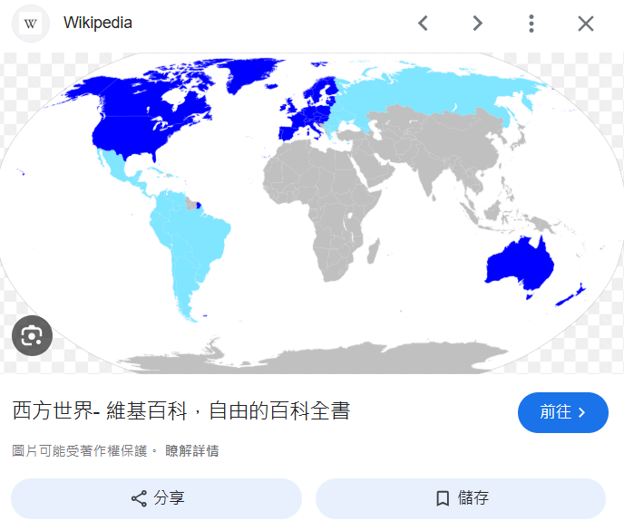
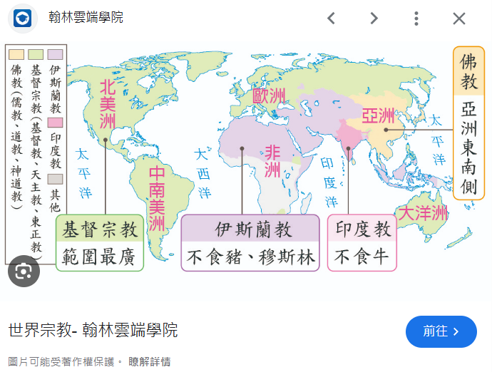

切換主題 ☀/🌙
本頁內容： 基督教世界觀與吸血鬼敘事的解構：從原始近東、歐化哥德到天使缺席之謎 其他文章連結：
展開文章清單
基督教世界觀與吸血鬼敘事的解構
—— 從原始近東神學、歐洲哥德濾鏡，到天使與上帝的「戰力缺席」法則
本網頁的作者不僅是吸血鬼文化的熱衷愛好者，還是深度探討東西方吸血鬼與殭屍題材的專家。多年来，他接觸過大量的吸血鬼作品和殭屍電影，無論是西方經典如《德古拉》、《夜訪吸血鬼》、《刀鋒戰士》、《暮光之城》、《凡赫辛》、《吸血鬼獵人：林肯總統》、《Hotel Transylvania》，還是東方的代表作如《殭屍先生》、《殭屍叔叔》、《音樂殭屍》、《殭屍家族》、《殭屍道長》、《千年殭屍王》，他都在不斷比較與探索。這使他對吸血鬼這一文化象徵有了獨特的理解，並且能夠深入分析這些超自然生物在不同文化中的呈現方式和隱喻意涵。
前言：雙重歷史錯位的集體反射動作
在當代吸血鬼流行文化愛好者的腦海中，「吸血鬼 ⇋ 基督教會」的死對頭關係幾乎已成為一種不可動搖的**條件反射動作**：只要吸血鬼現身，就必然伴隨著神父高舉銀十字架、潑灑祝聖聖水、在哥德式修道院內高誦拉丁文驅魔經文的經典場面。
然而，若以歷史文獻、人類學與原始神學進行嚴格審計，整套看似神聖不可分割的對立公式，本質上只是一場建立在「雙重歷史錯位（Double Historical Anachronism）」 下的集體文化幻覺：
錯位一（怪物源頭）：原始《聖經》裡根本沒有吸血鬼！ 吸血鬼（Upior）純粹起源於數千里之外、東歐與巴爾幹半島斯拉夫原住民在面對瘟疫暴斃時所催生出的鄉野「不潔腐屍」迷信。錯位二（體制源頭）：原始《聖經》裡也完全沒有神父、教宗與大公教會組織！ 初代使徒時期只有受迫害的平民地下聚會，根本不存在穿著錦緞法衣的特權官僚階級。神父與教廷完全是基督教傳播到歐洲並被羅馬帝國收編改造為「羅馬公教」後的政治產物。
本篇研究將層層撕開這套長達千年的審美濾鏡，帶領讀者退回兩千年前的歷史現場，重構這場跨越板塊的文化拼貼真相。
一、浪漫濾鏡的徹底破碎：歐化哥德幻夢 vs 原始西亞的血腥荒漠
現代大眾普遍將尖頂哥德教堂、手掌大小的銀製十字架、聖騎士與古堡吸血鬼視為「典型西方基督教文化」。然而，這本質上是經過中世紀歐洲文化濾鏡重塑後的歐化基督教奇幻 。若從歷史、考古學與地理氣候層面除錯，原始聖經舞台與現代歐式想像存在著劇烈的鴻溝：
🏰 大眾腦海中的「歐化哥德幻夢」
建築景觀： 直插雲霄的哥德式石造尖頂教堂、斑斕瑰麗的彩繪玻璃窗、幽暗深邃的大理石迴廊。生態與感官： 綠草如茵的修道院庭園、常春藤、精心修剪的歐式玫瑰花叢，信徒在溫帶微風中享用精緻烘焙點心。宗教儀軌： 神父身著金絲刺繡的華麗錦緞法衣，大廳迴盪著莊嚴肅穆的大鍵琴與管風琴，眾人齊唱優雅聖歌，淺嚐微甜紅葡萄酒。退魔法器： 佩戴於胸前、精雕細琢且散發柔和聖光的手掌大小白銀十字架飾品，能隨意灼傷吸血鬼與惡靈。天使外貌： 文藝復興濕壁畫上金髮碧眼、膚白如雪、面容慈祥俊美，背生純白鵝毛羽翼的人形守護者。
🏜️ 原始歷史現場的「沙漠殘酷實相」
建築景觀： 完全沒有尖塔！只有用曬乾黏土與稻草堆砌、低矮厚實的平頂泥磚方房 ，居民在炎熱屋頂曝曬無花果。生態與感官： 酷熱乾旱的熱帶沙漠，狂風漫天、飛沙走石；僅見低矮帶刺荊棘灌木、貧瘠砂岩與耐旱的椰棗樹。宗教儀軌： 赤裸原始的血腥燔祭 ！祭司在曠野烈日下親手割斷牛羊喉管，鮮血噴濺四周，毛髮與內臟在炭火上炙烤，空氣瀰漫濃烈的生血腥臭與皮肉焦臭 。刑具真相： 十字架是高達三米、重達數十公斤的粗糙巨型死刑木架，沾滿受刑人因窒息失禁噴濺的大小便、黃膿與發黑血痂 ，極度污穢。天使外貌： 令凡人理智斷線的克蘇魯式不可名狀怪物 ！長滿無數眼球的燃燒旋轉巨輪（座天使）、長著四張臉孔（人獅牛鷹）的多翼異形神獸。
📌 體質人類學維度剖析：高加索人種內部的「橫向平轉」 本同屬廣義的「高加索人種（Caucasoid）」 。因此，基督教的演化並非跨越完全不同人種的無中生有，而是一場高加索人種內部的橫向平轉與亞型覆蓋 ——它誕生於西南亞乾旱帶的深膚閃米特分支，隨後橫向移轉並被歐洲溫帶森林帶的印歐分支全盤接管與白人化。
⚠️ 常見認知盲區：閃米特人是「黃種人」嗎？
在中文語境中，大眾常因「西亞＝亞洲」而觸發粗暴的地理條件反射，再加上華語流行文化中那句深植人心的「黑眼睛黑頭髮黃皮膚，永永遠遠是龍的傳人」 ，讓人潛意識裡把「黑髮黑眼、非雪白肌膚」誤當成東亞黃種人的專利特徵。因此，當不少人得知歷史上的耶穌與門徒並非金髮碧眼時，大腦竟直接跳轉走向「難道耶穌也是黃種人？」的荒謬極端。事實上，深色毛髮、深褐瞳孔與橄欖色肌膚，本就是絕大多數高加索人種（地中海型、西亞型、南亞型）的原生常態 ；唯有歐洲阿爾卑斯山以北、終年日照不足的高緯度日耳曼與北歐亞型，才因突變演化出極端的淺髮（金/紅髮）與淺瞳（藍/綠眼）。正因兩者骨子裡同屬高加索譜系，歐洲人在文藝復興時期以自身亞型全面塗抹置換西亞亞型時，才顯得如此「渾然一體、毫無破綻」。


▲ 考據觀察：比對上方兩張地圖可清晰看見，現代「西方文化區」與「基督教為主要宗教之國度」的地理重疊率高達 90% 以上。正是這項歷史演變帶來的地理錯覺，讓現代人誤以為基督教是歐洲白人原生的信仰，徹底掩蓋了其源自西亞閃米特荒漠的原始面貌。
1. 建築形式的落差（平頂泥磚方房 vs 哥德尖頂石造教堂）： 根本不存在任何尖頂教堂或彩繪玻璃 。當時平民與先知居住的是典型的「四房泥磚屋（Four-room house）」——由乾草、黏土曬乾製成的日曬土磚（Mudbrick）砌成低矮厚實的方形房舍。其屋頂皆為平頂結構 ，是日常極為核心的生活與社交場所：居民在屋頂曬無花果、風乾穀物，甚至在涼爽的黃昏登頂祈禱與社交交流（如大衛王在平頂王宮屋頂散步）。這種低矮土黃的荒漠聚落，與中世紀歐洲阿爾卑斯山以北高聳入雲、直插天際、冰冷陰暗的哥德式石造大教堂形成極端對比。
2. 氣候與生態植被（乾旱荒漠灌木 vs 溫帶海洋性歐式庭園）： 熱帶沙漠與地中海半乾旱氣候 ，眼前盡是烈日曝曬、砂石漫天、貧瘠的曠野與河谷。其原生植被由耐旱經濟作物構成：椰棗樹（棕櫚）、橄欖樹、無花果、低矮荊棘刺灌木與野生葡萄藤 ；而歐化奇幻作品描繪的則是溫帶海洋性／溫帶大陸性氣候 ，環境充斥著常年潮濕的冷冽濃霧、茂密針葉林、黑森林、綠草如茵的草坪以及精心修剪的歐式玫瑰庭園。
3. 體質人類學與表型適應（西亞深膚深眸 vs 金髮碧眼白膚）：
4. 宗教儀軌與感官體驗（曠野焚肉血祭 vs 大廳聖歌葡萄酒）： 強烈的血腥與肉體衝擊 。古代閃米特人在炎熱荒涼的曠野會幕與祭壇前，祭司必須親手割斷牛、羊、鴿子的喉嚨，將鮮血潑灑在祭壇四周，並將牲畜內臟與整具屍身置於炭火上焚燒（燔祭）。現場在烈日高溫下瀰漫著生血的腥味、皮肉毛髮燒焦的刺鼻惡臭、烈火劈啪聲與垂死牲畜的哀鳴 ，極度原始狂野；反觀歐化後的基督宗教儀禮，已被精緻化為封閉石造大廳內莊嚴悠揚的管風琴與大鍵琴聲、眾人齊聲吟唱的優雅拉丁聖歌 ，以及神父身穿華麗法衣、輕輕分發象徵性的乾淨無酵餅並小啜一口微甜紅葡萄酒的體面儀式。
5. 「十字架」本質的斷層（沾滿排泄物的龐大死刑具 vs 驅魔克敵的手掌銀飾法器）： 高達兩至三公尺、重達數十公斤的粗糙巨大木製死刑具 。受刑人在烈日暴曬下被鐵釘刺穿手腕與腳踝，經歷數天漫長而痛苦的窒息過程；受刑者因括約肌失控、組織壞死與脫水，刑具表面浸透了大小便排泄物、失禁尿液、淋巴組織液、潰爛膿水與乾涸發黑的血跡 ，是極度屈辱、污穢且被猶太律法視為「被咒詛之物（申命記 21:23）」的野蠻工具，在當時完全不具備任何超自然驅邪力量 。精雕細琢、手掌大小、佩戴於胸前的白銀或金屬飾品 。在流行文化與哥德奇幻作品中，它甚至演變為能自體散發高溫聖光、瞬間灼傷惡魔皮膚、擊退夜行吸血鬼的「超自然魔法武器」 ，完成了從「污穢死刑工具」到「退魔神聖法器」的荒誕符號大逆轉。
二、建制神話的後天發明：聖經無吸血鬼，更無神父與教宗！
大眾在觀賞吸血鬼電影時，最常產生的理所當然聯想便是：「吸血鬼是撒旦的爪牙，因此身穿長袍的神父與羅馬教廷自然是神的代理人，出面降妖除魔。」
然而，從宗教社會學與教會史剖析，這完全是中世紀羅馬公教在歐洲完成的一場**「建制化發明」**：
📜 歷史事實清算：初代教會的極簡 vs 羅馬帝國的政治換皮
原始聖經的平權聚會： 新約聖經記載的一世紀初代教會，本質上是遭受猶太公會與羅馬帝國雙重圍剿的非法地下平民網絡 。他們在信徒家中的客廳或荒野洞穴中「掰餅聚會」，成員互稱弟兄姊妹。經文提到的長老（Presbyter）與執事（Deacon）純粹是負責分派救濟物資、主持日常聚會的服務性僕人，根本沒有任何神職與俗人的階級天塹，更完全不存在「神父（Priest）」與「教宗（Pope）」的專制統治概念 。羅馬公教的誕生（政治封建化）： 西元四世紀（西元 313 年米蘭敕令、西元 380 年薩洛尼卡敕令），羅馬皇帝君士坦丁與狄奧多西一世將基督教徹底合法化並立為國教。為了管理龐大的帝國疆域，教會直接全盤複製了羅馬帝國的官僚行政階級 ：羅馬主教升格為教宗（Supreme Pontiff，此詞原為羅馬帝國最高異教祭司長之頭銜）、各地設總主教與主教管區，並將原本中性的長老改造成擁有「代神赦罪特權、主持聖禮」的職業神職人員（神父）。文化拼貼的終局： 起源於東歐斯拉夫民間的吸血鬼，在十四世紀遭遇了這套高度政治化、封建化的羅馬公教官僚機器。教會為了向東擴張世俗控制權、將一切異教迷信收編為自身權威的註腳，便順水推舟將東歐的腐屍惡靈打成「魔鬼附身」，並將自身發明的神父、聖水、銀十字架包裝成全天下唯一的救贖管道。兩個原本與原始聖經毫不相干的歐洲產物，就此在哥德夜色中完成了長達百年的虛構聯姻。
三、文化認知盲區與戰力悖論：從「該隱始祖偽神話」到「天使缺席之謎」
🧠 大眾思維的「三層認知死結」
在當代流行文化的浸潤下，多數讀者與觀眾在接觸吸血鬼題材時，往往會無意識地跌入一套自相矛盾的連鎖認知陷阱：
符號的過度綁定： 看到銀十字架、聖水、大理石教堂與獵魔修士，便先入為主認定吸血鬼必然是「正統基督教世界觀的附屬產物」。
二創篡位正典（該隱始祖神話）： 由於 1991 年白狼桌遊《吸血鬼之避世潛藏》（VTM）在全球奇幻圈的巨大成功，「該隱弒弟遭天罰、四處流浪成為吸血鬼始祖」的現代後設補丁被極端擴散，以至於絕大多數未曾深讀經典的普羅大眾，誤將這段 90 年代的商業二創當成了《聖經·創世記》幾千年前的原版神話 ！
必然引發的終極納悶： 既然大眾深信吸血鬼源自該隱、該隱直屬於耶和華的神罰體系，而《聖經》中上帝最核心的執法武裝正是「天使軍團」——那麼一個最根本的邏輯死穴便油然而生：「既然這是一場上帝與墮落血族的家族恩怨，為何在漫長的吸血鬼百年文本中，天使永遠徹底缺席、對地面的吸血鬼不聞不問？」
👉 核心除錯： 正是因為大眾誤將「現代桌遊二創」當成了「正統聖經神學」，才會產生「天使為何不下凡除魔」的錯位期待。而創作者為了維持故事的成立，更不得不動用一套殘酷的「戰力維度封印法則」 。
若我們順著大眾的誤解，強行將《聖經》原典中的天界戰力調入吸血鬼的哥德黑夜，整套敘事結構便會瞬間遭遇毀滅性的「戰力降維打擊」 ：
存在層級
代表角色
聖經與神學戰力指標
在吸血鬼文本中的真實命運
天界宇宙級（Celestial） 熾天使 / 天使軍團
手握天火烈焰；毀滅所多瑪與蛾摩拉兩座城；一夜之間擊殺 18.5 萬亞述精銳大軍；掌管全域天災。
絕對禁忌：必須永遠封印 。若天使降臨，實力懸殊形同「用反物質軌道砲轟炸路邊野狗」，所有懸念與恐怖氛圍瞬間清零。
深淵惡魔級（Demonic） 墮天使 / 高階惡魔
掌控概念級詛咒、靈魂契約、撕裂現世法則。
偶爾作為吸血鬼轉化時的幕後契約者，但其本體受到現世物理與結界極端限制。
民俗生物級（Folkloric） 吸血鬼（德古拉等）
局部肉體強化、催眠、化霧/人形浮空、超常自癒；畏懼陽光、銀器與貫穿心臟。
文本戰力核心 。本質上只是具有肉體變異的「低階地方性感染生物」，在宇宙神學維度下極其渺小。
凡人冒險者（Human） 獵人、神父、醫生
血肉之軀、有限體能、火器冷兵器、化學藥草與對法器的信念。
故事真正的主角 。唯有面對實力略高於自己、但凡人仍有勝算的民俗怪物，人類的勇氣與犧牲才能打動讀者。
系統除錯結論： 1. 神學源頭上的偽命題： 吸血鬼源自東歐斯拉夫鄉野的腐屍迷信，根本不在希伯來《聖經》的戶口名簿上。上帝與天使從未被賦予過「打吸血鬼」的神學職能，大眾的納悶純粹是被《避世潛藏》的二創洗腦所致；
2. 敘事自洽上的致命死結： 天界力量一旦介入哪怕一次，作者就必須回答那個著名的伊壁鳩魯難題——「如果天使一彈指就能淨化全歐陸的吸血鬼，那過去數百年凡人被屠殺凌虐時，天使為何集體裝死？」
因此，虛構作品只能採取最聰明也最無奈的默契：徹底讓天使長年離線 ，把舞台完全留給手持十字架與銀樁、在絕望暗夜中以血肉之軀奮戰的凡人英雄。
四、符號象徵的世俗化：《惡魔城》的職業矩陣與人替神行動
當神明與天使依照法則集體退場、不再顯露神蹟時，神學結構便被迫全面走向「世俗化與實用化」 ——從「神在行動」轉化為「人替神行動」。
點選下方時間線節點，檢視神學結構如何逐步世俗化、心理化，並最終促成吸血鬼獵人角色的誕生：
📖 聖經時代（古代近東）
上帝與天使直接以超自然神蹟介入歷史（分開紅海、天降硫磺、死者復活）。人類完全是神聖意志的見證者與順服者，不存在獨立討伐邪惡的冒險者概念。
🏛️ 中世紀歐洲（建制化與世俗化）
希臘理性哲學與羅馬封建制度使上帝形象逐漸「遠化」。教會與教階體制成為世俗權力的代言人，神聖力量開始物化並寄宿於聖物（聖水、十字架、聖徒遺骨），信仰轉化為凡人可操作的儀式技術。
🕯️ 哥德文學與現代奇幻（19世紀至今）
上帝徹底沉默退場，超自然黑暗全面具象化（吸血鬼、狼人、女巫）。神職人員、驅魔獵人（凡赫辛、貝爾蒙特）被迫「人替神行動」，以凡人智慧、物理武器與符咒在暗夜中背水一戰。
日本經典遊戲《惡魔城》（Castlevania）正是歐化基督教奇幻的集大成者——它將原本的神學秩序拆解為豐富的文藝復興冒險職業：
德古拉（Vlad Tepes）： 從古典暴君被重塑為精通古代失落黑魔法、因痛失人類愛妻而向神宣戰的悲劇領主；崔佛·貝爾蒙特（Trevor Belmont）： 被教會放逐的家族傳人，象徵凡人以血肉之軀手持聖鞭對抗非人天災；賽法·貝爾南堤斯（Sypha Belnades）： 將被中世紀宗教判定為異端的元素魔法（火、冰、雷），轉化為對抗暗夜的正義利器；阿魯卡多（Alucard）： 半人半吸血鬼（Dhampir），象徵雙重血脈的宿命悲哀與對抗暴君父親的道德清醒。
五、結語：哥德夜色下的祛魅與救贖
從乾旱炎熱的西亞曠野走入陰冷潮濕的東歐黑森林，吸血鬼與基督教的相遇，本質上是一場「神聖神話的世俗化（Secularization）與浪漫主義重構」 。
原始聖經的神學世界是嚴苛且絕對神聖的：在那裡，神蹟是壓倒性的天威，十字架是屈辱血腥的殘酷刑具，平民唯有順服；神職官僚與吸血妖魔在當時皆未誕生。然而，當這套信仰跨越地理板塊、融入歐洲中世紀的建制化權力與斯拉夫民間的夜色時，人們將對瘟疫、階級壓迫與死亡的原始恐懼，具象化成了夜行吸血的貴族怪物；同時，也悄悄讓天界的「天基打擊力量（天使軍團）」無限期休眠。
正是這種「神性的退場與沈默」 ，才反向逼出了人性的光芒：當十字架從沾滿排泄物的木架被提煉為手掌中的銀飾法器，驅魔不再是神蹟的被動降臨，而是凡人以血肉之軀手持聖鞭、調用理性與符咒向命運發起的反抗。在哥德奇幻的世界裡，我們看見的從來不是神的無所不能，而是人類在失去神明庇護的漫漫長夜中，如何學會點亮屬於自己的火把。